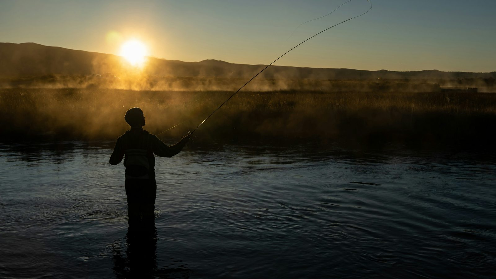
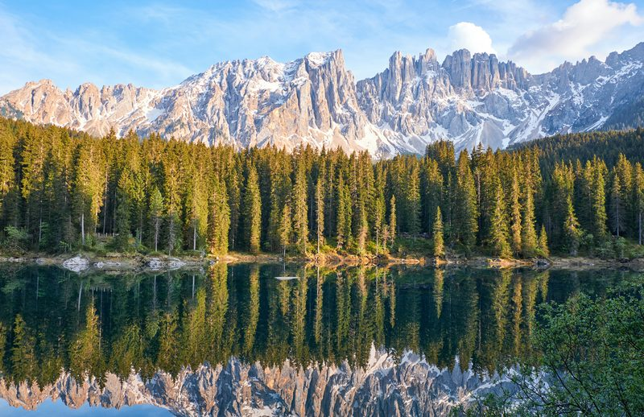
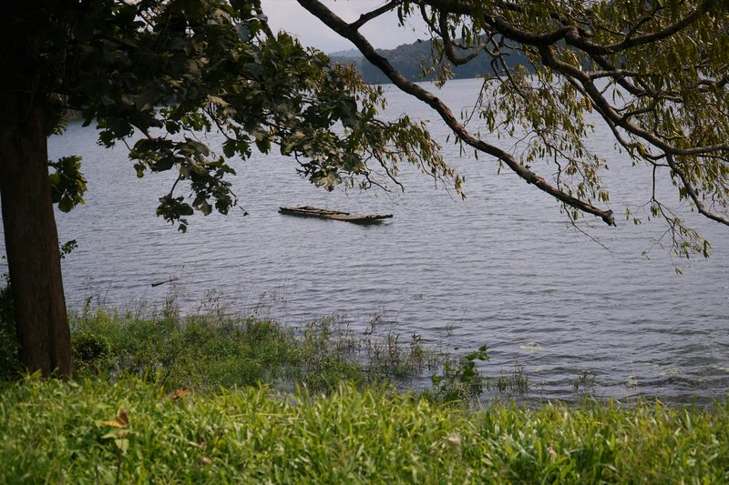
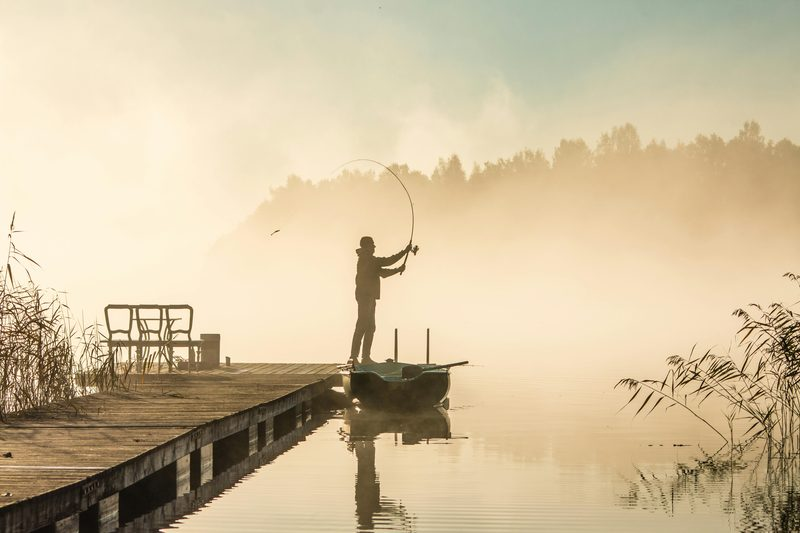
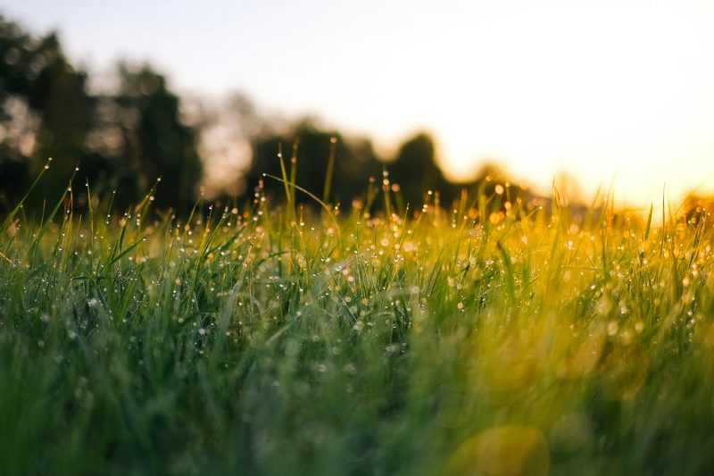
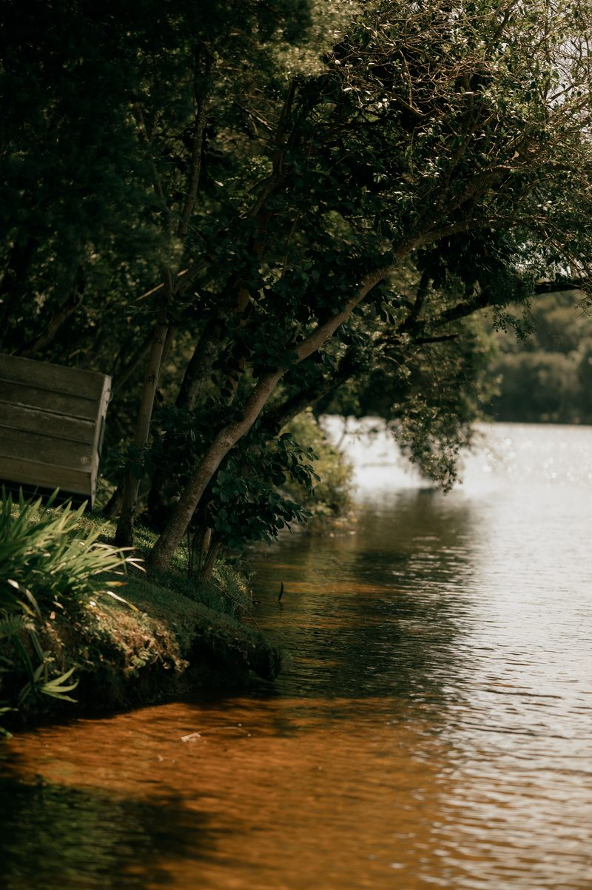
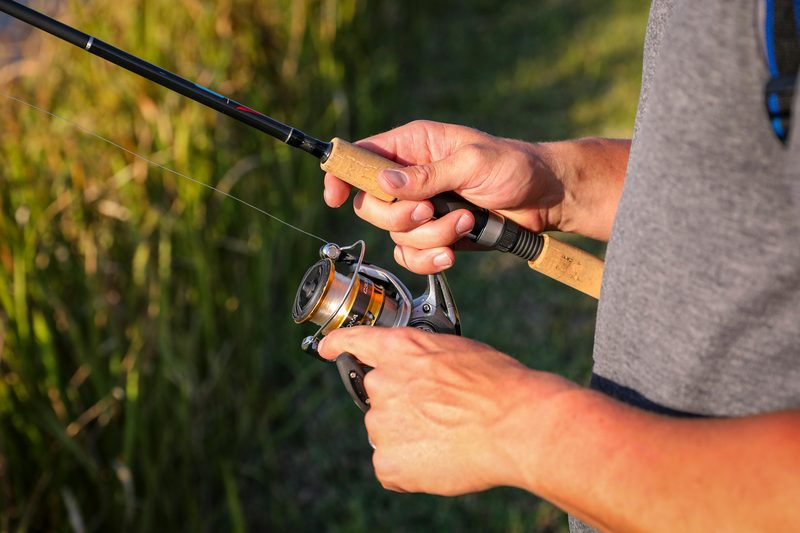

Local fishing guides, lure recommendations, and seasonal tips for anglers across the Carolinas.
Explore local fishing locations with helpful tips on species, seasons, and conditions.



A peaceful local spot with bass, bluegill, and catfish opportunities.
View DetailsFishing conditions change throughout the year. Use seasonal patterns, weather, and water temperature to choose better spots and lures.

Fish shallow areas before the sun gets high.

Target docks, trees, rocks, and overhanging cover.

Use a slower reel speed when fish are less active in hot or cold water.